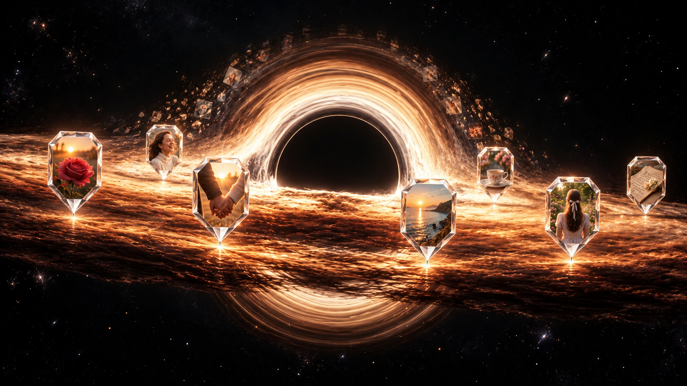

A.Crystal PinPaling dekat dengan idemu


Bentuk. Bingkai bersegi dengan ujung kecil; tepian putih mengilap dan pantulan amber dari lingkungan.
Rasa. Jelas menunjukkan “foto ini berasal dari titik ini”. Bentuk penanda paling mudah dipahami tanpa instruksi.